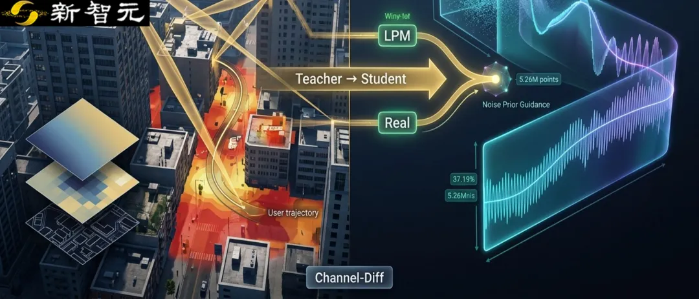
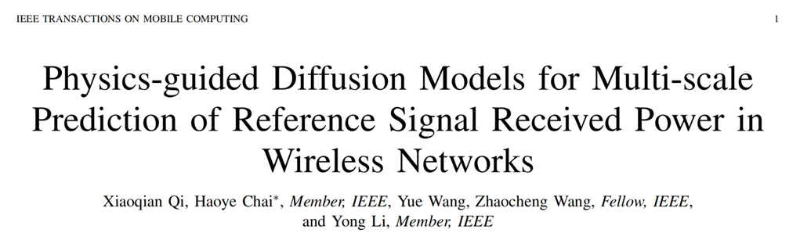
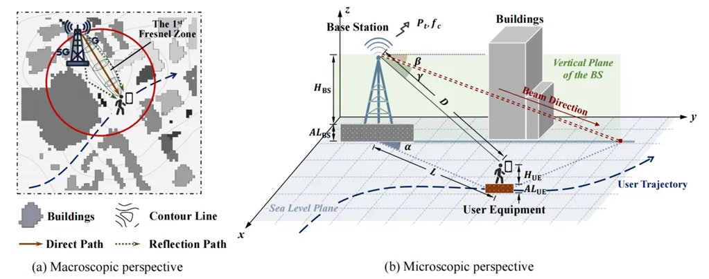
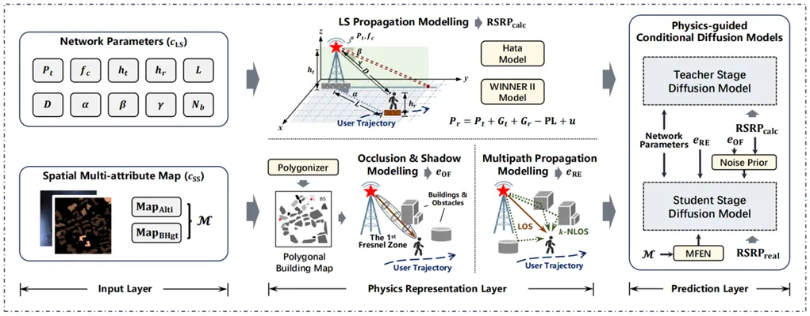
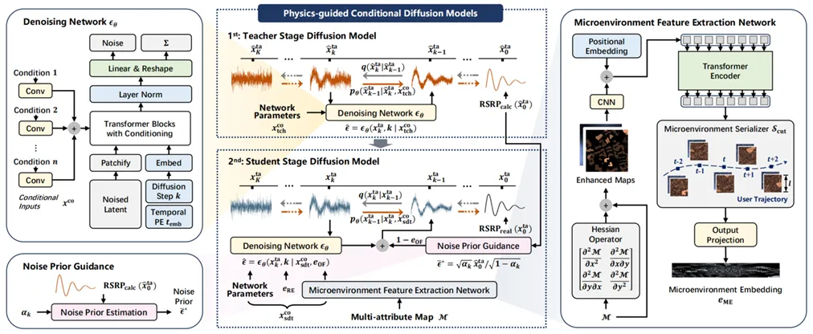
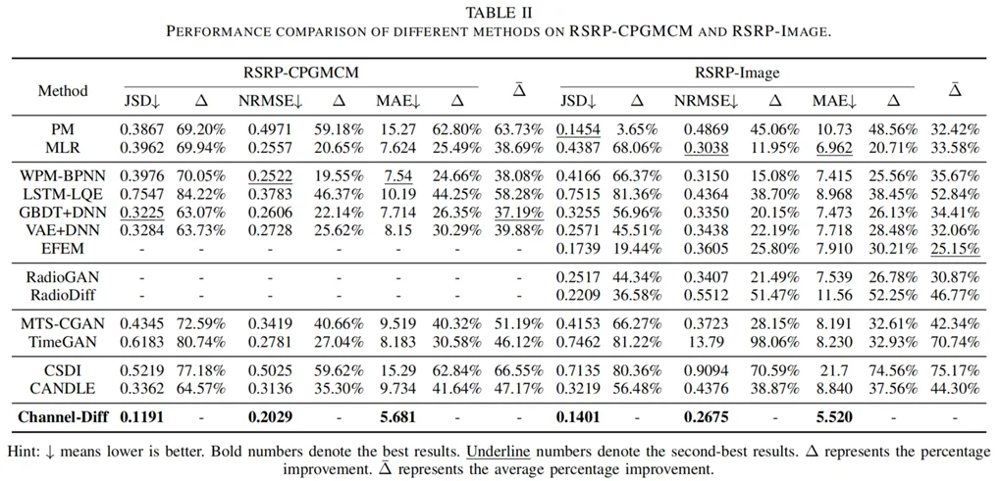
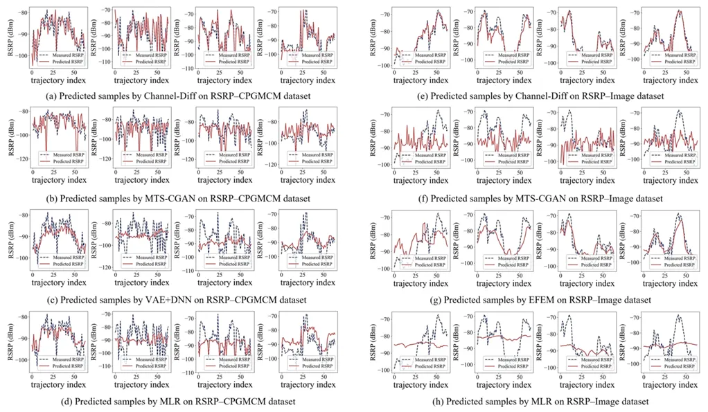
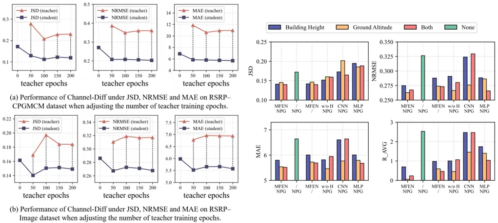
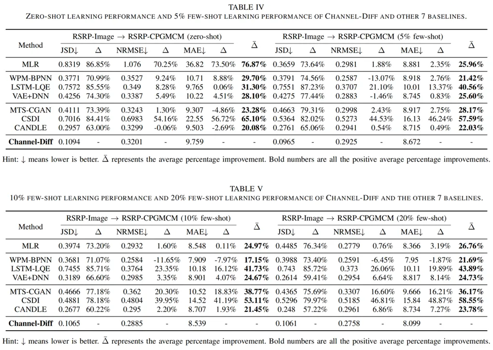
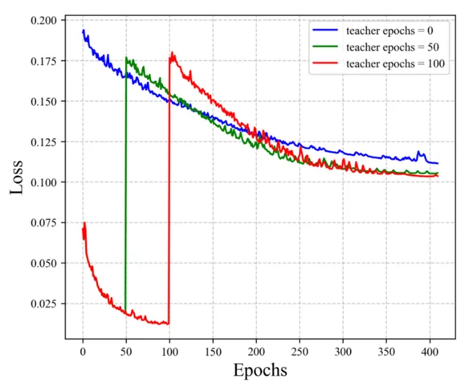

新智元报道
新智元报道

在移动通信网络中，参考信号接收功率（RSRP）能够直接反映无线信道的质量，影响用户体验与网络吞吐。
无线信号在城市空间的传播受到路径损失、阴影衰落等大尺度衰落损耗，以及多径效应等带来的小尺度衰落损耗。
传统方法难以对不易表征的小尺度衰落进行建模，制约了RSRP预测的精度。
清华大学、北京邮电大学联合团队围绕无线网络RSRP预测问题提出物理引导扩散模型Channel-Diff，将RSRP预测表述为条件生成问题：既要恢复相对稳定的大尺度传播趋势，也要学习随机的小尺度衰落分布。
Channel-Diff将传播模型、遮挡阴影、多径几何和城市微环境嵌入条件扩散模型，通过教师—学生两阶段训练与噪声先验引导统一建模多尺度信道特性。在两套真实测量数据集上，Channel-Diff相较次优方法取得37.19%和25.15%的综合性能提升。

论文链接：https://ieeexplore.ieee.org/document/11680013
代码链接：https://github.com/MichaelTsii/Channel-Diff

RSRP是移动网络中的关键无线测量指标，广泛用于覆盖评估、切换、小区选择、资源分配和功率控制。随着网络向大规模、低时延和智能化演进，运营商希望在真实测量发生前预测信道质量，从「被动反馈」走向「主动感知」。
真实无线信道具有明显的多尺度特性。
大尺度（LS）衰落主要由传播距离、载频、路径损耗和遮挡阴影决定，变化较平缓；小尺度（SS）衰落则来自多径叠加，可在波长尺度内产生快速、剧烈的功率波动。论文指出，这类瞬时变化可达数十dB，不能被简单的趋势预测忽略。
现有方法各有局限：经典传播模型物理意义明确，但难以适应复杂城市环境；系统级仿真能描述更多细节，却计算开销较大；机器学习方法更灵活，但通常偏重大尺度特征，对阴影、多径等小尺度随机性建模不足，也缺少传播规律对学习过程的约束。
Channel-Diff的思路是把「可解析的物理规律」和「难解析的随机残差」分开处理：先让模型吸收可明确建模的传播知识，再由数据驱动部分集中学习剩余的小尺度变化。

图1｜典型无线传输场景：宏观视角展示建筑、地形、直射/反射路径与第一菲涅耳区；微观视角展示基站—用户几何关系、波束方向和用户轨迹。
围绕这一思路，Channel-Diff由输入层、物理表征层和预测层三部分组成，将大尺度与小尺度信息分别提取、表征后注入扩散模型。
• 输入层：输入10个网络参数，包括发射功率、载频、收发高度、传播距离、波束角度和建筑遮挡数量等；同时输入由地面高程图和建筑高度图组成的多属性城市地图，为用户周围的空间环境建模。
• 物理表征层：大尺度传播建模（LPM）用Hata、WINNER II等模型获得理论RSRP；遮挡与阴影建模（OSM）结合第一菲涅耳区和刀刃绕射量化阻挡；多径传播建模（MPM）则把多阶反射路径编码为结构化特征。
• 预测层：条件扩散模型通过逐步去噪从大尺度轮廓恢复到小尺度细节；微环境特征提取网络（MFEN）进一步从城市地图中学习用户轨迹附近的建筑与地形结构。

图2｜Channel-Diff总体框架。网络参数与多属性城市地图经LPM、OSM和MPM形成多尺度物理表征，再由教师—学生两阶段条件扩散模型结合MFEN完成RSRP预测。
这一设计与扩散模型「由粗到细」的生成过程自然对应：早期去噪恢复低频、大幅度的大尺度趋势，后期逐步补充高频的小尺度波动。相比只输出条件均值的确定性回归，扩散模型可以学习条件分布，更适合描述具有随机性的衰落过程。

Channel-Diff的关键设计，是把「物理知识学习」和「真实数据学习」拆成两个阶段：先掌握确定性的大尺度传播规律，再把模型能力集中到更难预测的小尺度残差上。
• 第一阶段：Teacher Stage。模型以网络参数和基站—用户几何为条件，以传播模型计算的RSRPcalc为目标，先学习路径损耗等稳定的大尺度规律，为后续训练提供物理合理的初始化。
• 第二阶段：Student Stage。在教师模型基础上，以真实测量RSRPreal继续训练，并加入城市地图、反射路径嵌入和微环境嵌入等小尺度条件，使模型重点刻画多径叠加造成的随机残差分布。
• 噪声先验引导（NPG）。作者利用遮挡因子动态调节物理先验强度：无遮挡或弱遮挡的LOS场景更依赖传播模型；遮挡严重时，则降低解析模型权重，让真实数据承担更多建模任务。
因此，Channel-Diff并非简单把物理模型与神经网络拼接，也不同于通过PDE残差约束网络的传统PINN。它通过物理表征、分阶段训练和场景相关的噪声先验，在「解析物理」与「数据经验」之间实现动态融合。

图3｜物理引导条件扩散模型。中部为Teacher/Student两阶段学习，左侧展示多模态去噪与噪声先验引导，右侧MFEN通过Hessian增强、Transformer和轨迹序列化提取局部微环境特征。
MFEN专门提取用户局部环境中的小尺度线索：Hessian算子突出建筑边缘等反射相关结构，Transformer建模空间依赖，再沿用户轨迹裁剪并序列化局部区域，得到与RSRP序列对齐的微环境嵌入。
作者在两套真实测量数据集上验证Channel-Diff。RSRP-CPGMCM包含8台终端采集的5,259,757个测量点，并整理为80,000条长度为64的RSRP序列；RSRP-Image包含180张320 m×320 m无线电地图，最终构造3,600条用户轨迹样本。
对比方法共13种，覆盖传统传播模型、线性回归、RSRP专用网络、RadioGAN/RadioDiff，以及TimeGAN、CSDI、CANDLE等生成模型。评估采用JSD、NRMSE和MAE，分别衡量分布差异、归一化误差和平均绝对误差。

表II｜Channel-Diff与13种基线在RSRP-CPGMCM和RSRP-Image上的性能。JSD、NRMSE、MAE均越低越好；粗体/下划线表示最优/次优，Δ̄表示三项指标的平均提升。
Channel-Diff在两套数据集上均取得整体最优结果：在RSRP-CPGMCM上，相较次优GBDT+DNN综合提升37.19%；在RSRP-Image上，相较次优EFEM提升25.15%，且优势同时体现在分布匹配和点预测误差上。
从生成样本看，MTS-CGAN较难还原多样化局部波动，VAE+DNN易过度平滑高频变化，EFEM借助环境特征能较好保持波形；Channel-Diff则更好兼顾了大尺度趋势与小尺度起伏。

图4｜代表性预测样本。左侧对应RSRP-CPGMCM，右侧对应RSRP-Image，对比真实RSRP与Channel-Diff及多种基线的预测曲线，观察大尺度趋势和局部波动的还原效果。
以5G NR TS 38.133中的±9.5 dB测量精度要求作为参考，Channel-Diff在RSRP-CPGMCM和RSRP-Image上分别约有83%和82%的预测绝对误差低于9.5 dB，显示出较强的实际预测精度。
消融实验显示，教师阶段预训练质量与最终结果呈正相关，较合适的训练轮数约为50—100 epoch；移除MFEN后性能明显下降，说明用户附近建筑与地形的局部结构确实包含重要的小尺度衰落信息。

图6–7｜消融实验。左侧考察Teacher Stage训练轮数对JSD、NRMSE和MAE的影响；右侧分析MFEN、Hessian、CNN/MLP替代方案、NPG以及不同地图属性的贡献。
物理知识还带来了明显的跨场景迁移优势。模型从RSRP-Image迁移到RSRP-CPGMCM时，零样本相对基线综合提升不低于20.08%；仅使用5%、10%和20%目标数据进行少样本训练时，提升分别不低于21.42%、17.15%和21.69%。

表IV–V｜跨数据集迁移结果。表IV给出Zero-shot和5% Few-shot，表V给出10%和20% Few-shot；与7种基线比较，JSD、NRMSE和MAE均越低越好。
在鲁棒性方面，用户位置偏差增至80 m时，各项指标总体下降约10%—13%，模型仍较稳定。Channel-Diff对序列长度也不敏感；MFEN在约85 m局部视野下表现最佳，说明小尺度衰落主要受用户附近一定范围内的城市结构影响。
两阶段训练同时提升了收敛效率。教师阶段先把大尺度传播结构写入模型，学生阶段面对真实测量时拥有更好的起点、损失下降更快，减少了从数据中重新摸索基础传播规律的成本。

图13｜不同Teacher Stage训练轮数下的训练损失。0、50和100个teacher epochs对比显示，教师预训练可降低学生阶段初始损失并加快后续收敛。
Channel-Diff的价值不只是把扩散模型用于RSRP序列生成，更在于提供了一套多尺度信道建模范式：可解析的大尺度规律由物理模型提供，难解析的小尺度随机性由生成模型学习，再通过场景相关先验动态融合。
这种「先物理、后数据；分尺度、再融合」的思路兼顾预测精度、可解释性和跨数据集迁移能力，也为无线网络数字孪生、覆盖预测和移动性管理等任务中融合传播规律与生成式AI提供了新的技术路径。
参考资料：
https://ieeexplore.ieee.org/document/11680013
编辑：LRST